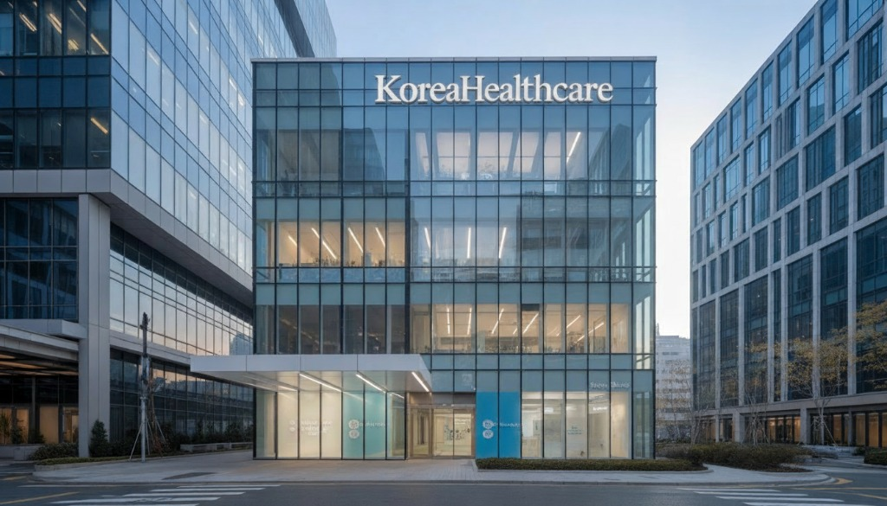

우리는 저마다의 이유로 조용히 지쳐갑니다.
하지만 일상의 모든 문제들을 의사와 병원에 기댈 수는 없습니다.
한국헬스케어는 사람들의 일상에서 더 나은 삶을 고민합니다.
우리의 삶은 병원 밖에서 더 오래 지속됩니다.
건강은 병원에 가기 전과 병원 문을 나서는 순간부터 시작되는 관리의 영역입니다.
식단, 수면, 스트레스, 운동 등 일상의 모든 순간이 모여 나의 건강 성적표가 됩니다.
이것이 우리의 모든 건강 문제를 의사와 병원에만 맡길 수 없는 이유입니다.
한국헬스케어는 병원 방문 이전의 삶, 그리고 퇴원 이후의 삶에 집중합니다.
당신의 일상이 곧 최고의 치료제가 될 수 있도록 비의료 영역에서 세심한 가이드를 제공하겠습니다.
사람의 일상, 그 다양한 순간에
세심함과 기술을 더한 K-웰니스를 만들어 갑니다.
